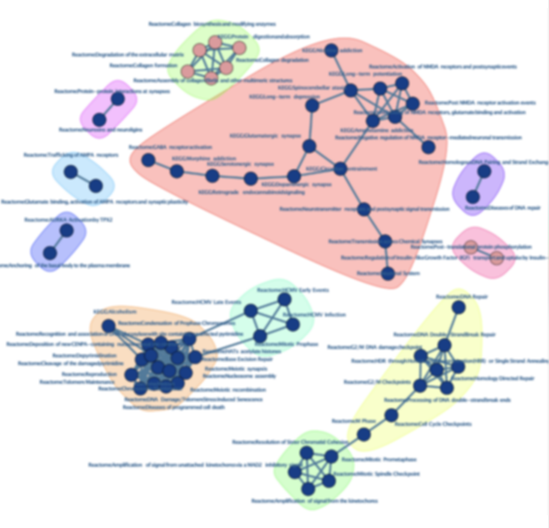

问题与思考
实际工作中，发挥相同生物学功能的基因可能富集到众多相似的生物学主题或者通路上。例如，只要白介素相关的基因被纳入富集分析，很可能Reactome数据库的”中性粒细胞脱颗粒”或者”IL-4或者IL-13通路”便会呈现在现有工具的结果前列。这种结果没有任何错误，有助于我们在第一眼就可以明白纳入分析的基因具有的最主要的功能是什么。但实际上，生物学问题很可能不是一座孤岛。如前述例子，只关心中性粒细胞、IL-4、IL-13可能会忽略炎症背景下的众多信息。因为我们知道，炎症产生是多细胞多生物学主题的过程。随着高通量测序的普及，以及对于”微环境”概念的认识加深，诸多领域如肿瘤微环境方面的研究更希望从总体上把握所有发生改变的基因的功能。这对现有的可视化工具造成了巨大挑战。 在GO数据库中，现有的一些去冗余工具例如Gosem可以很好地完成精简结果的工作，帮助我们解释结果。但是仍然缺乏针对多数据库分析时可用的去冗余工具。此时，多数据库联合分析带来的巨大结果量可能会对结果解读亦会造成巨大挑战。

在湿实验实验室中，我们面对的数据通常为小样本，甚至可能为低质量数据。有时候设定较严格的差异基因阈值或者进行p矫正可能造成无法富集到结果。但是如果降低标准，会有众多”低质量”富集结果被呈现。此时可能会对我们造成误判的例子会是：仅五六个基因存在差异，便关联了众多可能数目庞大的生物学主题。这种情况是十分危险的，可能这若干个基因只在该通路的边缘部分、或者非核心路径上，甚至可能根本无法代表整条通路发生的改变。基于ORA的结果很可能无法被GSEA或者ssGSEA验证，甚至可能与湿实验矛盾。例如，若干神经元相关基因发生改变，很可能关联到很多神经退行性疾病、神经系统离子通道等等通路。其实，很多结果并不完全是我们想要的。
这本身可能是数据挖掘无法解决的问题。有时候需要人为判断。但是人面对众多未经整理过的结果，是非常无力的。 让我们回头看去冗余工具，很多去冗余工具是基于通路水平的相似性计算的。考虑的是参与的所有基因。但是具体到每一个数据集中，实际富集到去参与生物学主题的基因可能是不全的，甚至在某些极端情况下overlap的很少。这可能让基于整条通路的相似度评估带来困难并带来假阳性或者假阴性。
可能我们更加关心那些能够让这些通路发生所谓差异的基因。可以说生物信息学是面，实验是点。实验离不开对重要的基因对验证。这时候如果我们希望获得可能关联这么多通路的一些基因，同时希望利用多个数据库带来的众多结果。那么，如何整理数据便是一个巨大的挑战。
现在有一些工具，如CBNplot在这方面做出了尝试。CBNplot基于贝叶斯算法推断重要基因。但是这可能对湿实验实验室不太友好。任何高级算法都是基于大数据的基础上的，但是可能湿实验中的数据量仅为五到十个样本，甚至有的样本组内重复仅两三个。有部分实验设计压根没去考虑重复组。这是极端的情况，更多的样本损耗来自于低质量数据。在小样本中，每一个数据都很宝贵。总而言之小样本对统计学算法带来了挑战。
以上我们谈到了若干问题：
- 多数据库联合分析的时候如何去冗余？
- 如何一次性概览所有分析结果，并且把相似的放在一起（这个emapplot可以实现）
- 提供一个对于富集分析结果整理的方法，避免大量的人工挑选，并提取这些关联了众多通路的基因（很多基因找出来还得去找文献那个基因在通路或者生物学过程中发挥什么）
- 如何在帮助实验室在低质量结果中挑选关键需要把握的基因？
- 低质量分析中，如何解读若干个基因关联众多通路的情况？
- 如何在避免高级建模的同时完成这些？
总之，我们希望有一款工具，就是整理多数据库整合结果，并且能把相似的基因摆在一起，供我们挑选。
TODO
- 比起可视化结果，更需要一种整理结果的方式。
- 挑选合适的基因是为了设计实验。
- 把通路摆在一起是为了有针对性的讨论
解决方案
- 计算通路参与基因的在不同项目的重复率
- 生物学主题相同
- 关键基因
- 方便解读
- 基于网络的聚类
- 基于矩阵的聚类
- 帮助解读